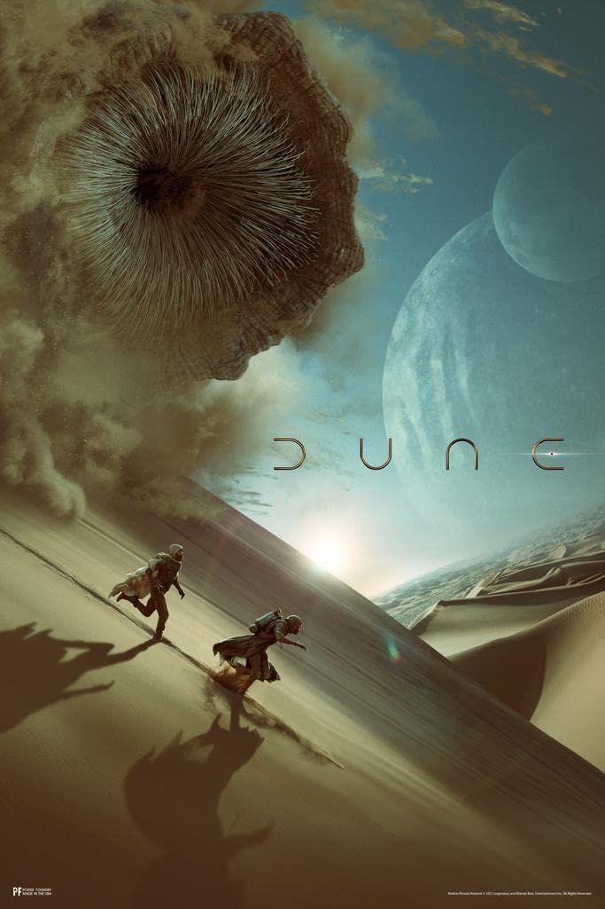

|  | Dune, una épica saga de ciencia ficción, se desarrolla en el desértico planeta Arrakis. La familia noble Atreides, liderada por el joven Paul Atreides, es enviada a gobernar Arrakis y controlar la producción de la especia melange, una sustancia vital para la navegación interestelar y con propiedades psicoactivas. La trama se enreda en conflictos políticos, intrigas, traiciones y profecías religiosas. Paul, destinado a convertirse en el Kwisatz Haderach, un ser con habilidades sobrehumanas, enfrenta desafíos mientras las casas nobles compiten por el poder. relación simbiótica entre la especia y el ecosistema de Dune es fundamental. Tras la muerte de Frank Herbert, su hijo Brian Herbert continuó la saga, expandiendo el universo con precuelas y secuelas. Dune ha influido en la cultura pop y sigue siendo una lectura fascinante para los amantes de la ciencia ficción. |